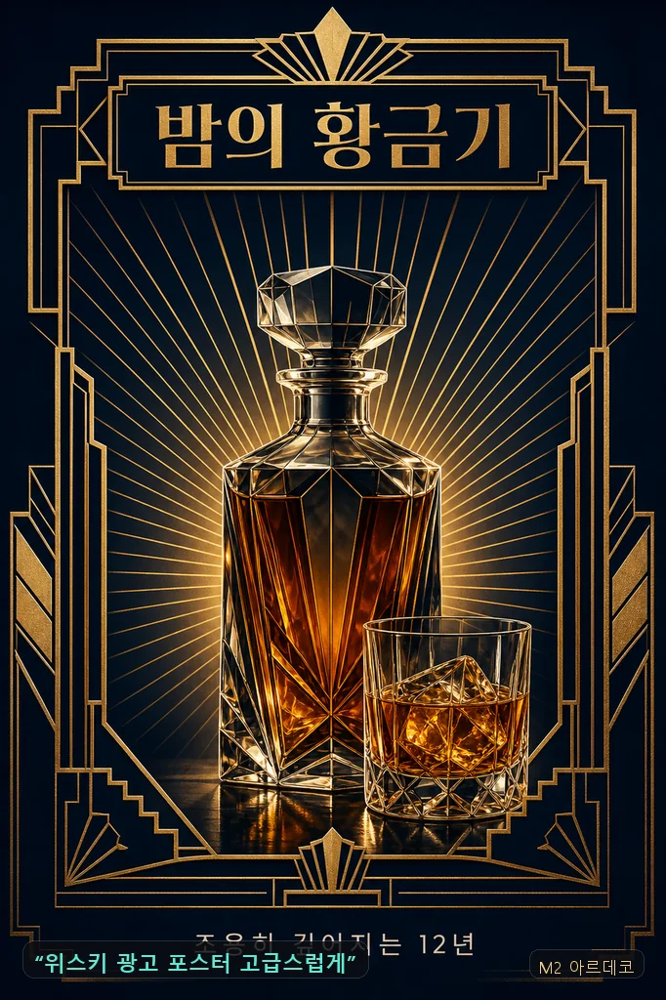
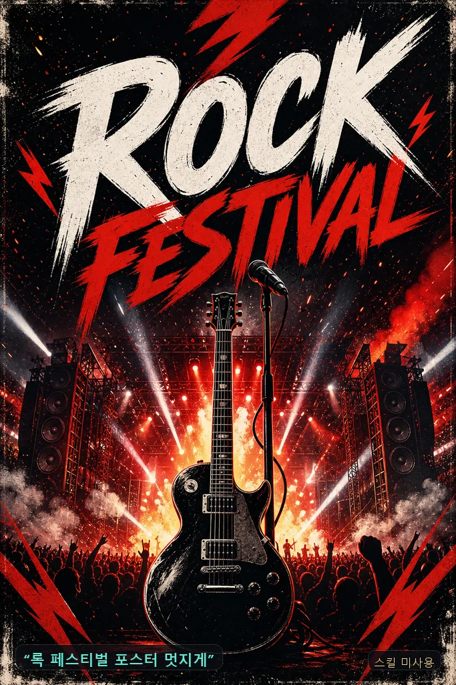
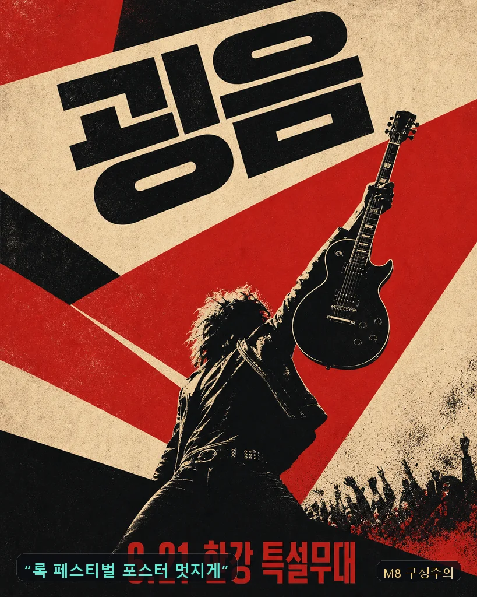
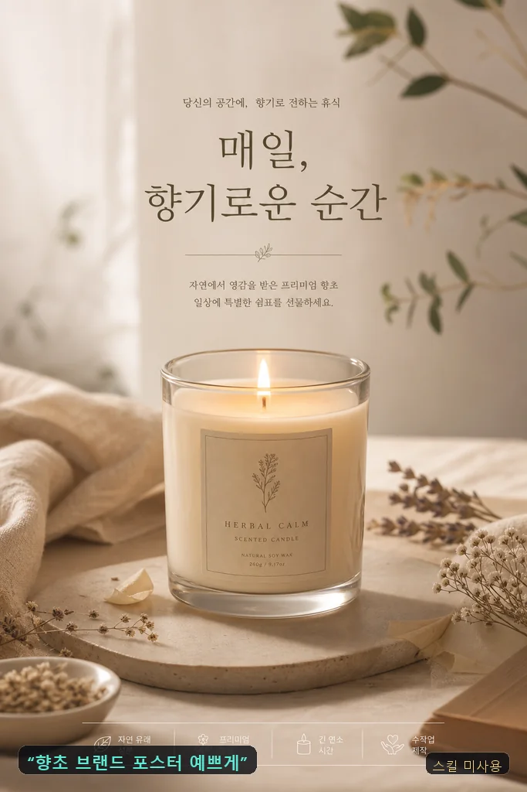
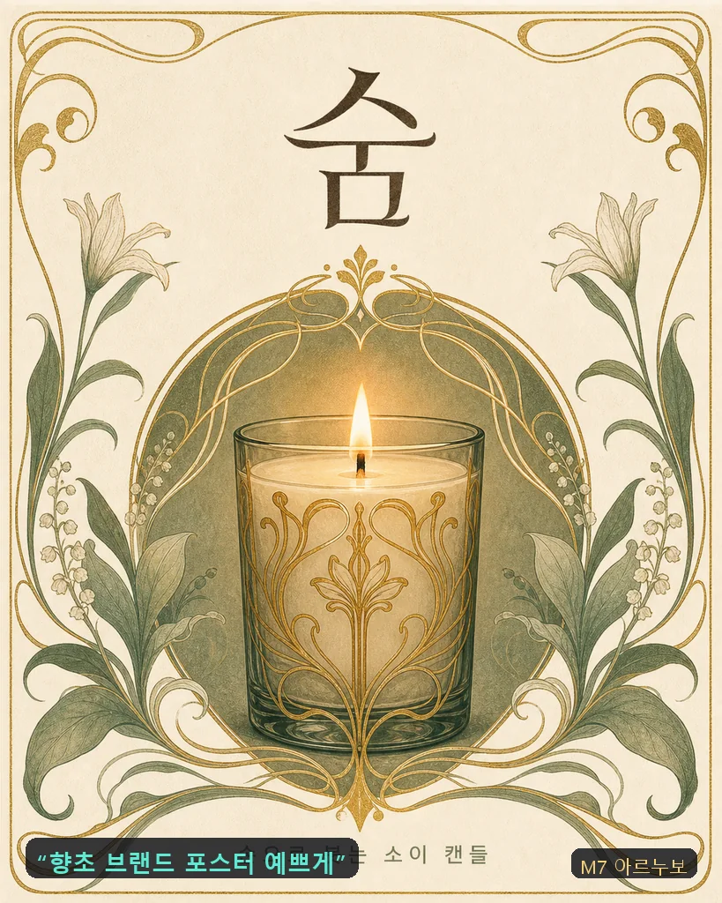
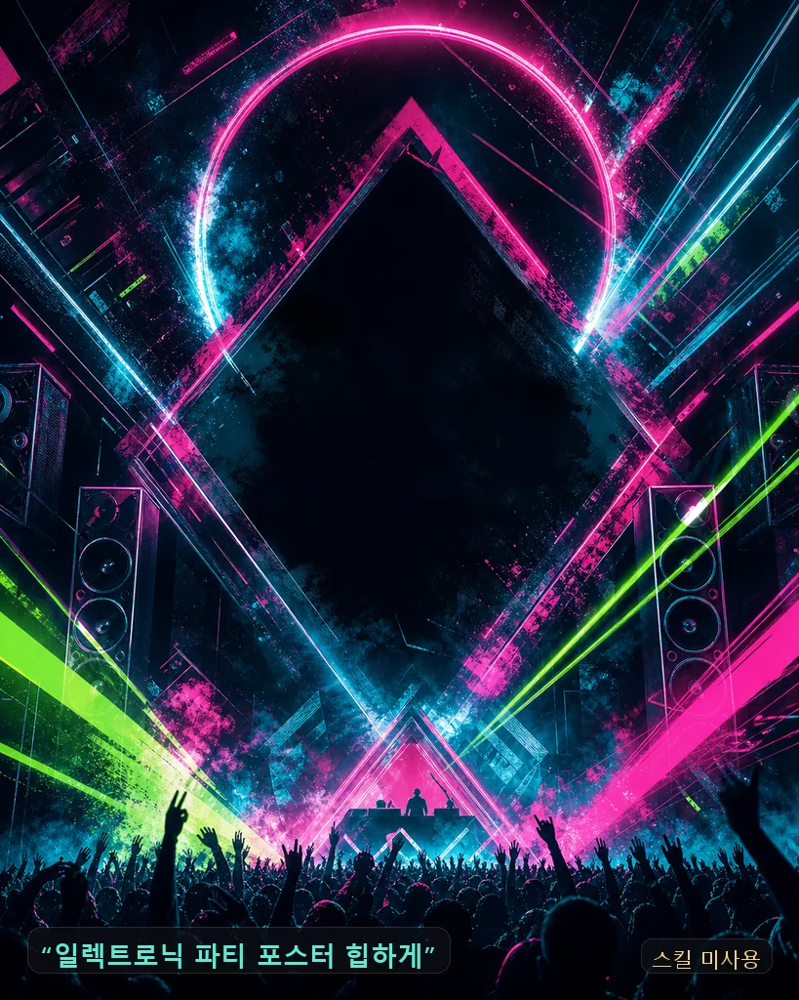
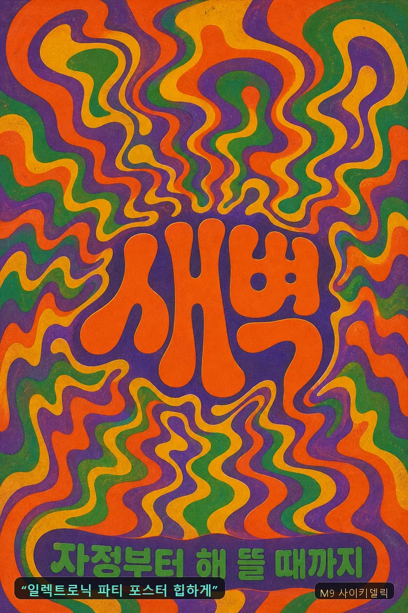

생성 예시 — 프롬프트가 이렇게 바뀝니다 🐾
같은 gpt-image-2다. 왼쪽은 사람이 친 한 줄을 그대로 넣은 결과, 오른쪽은 그 한 줄을 킷이 컴파일해서 넣은 결과 — 차이는 프롬프트뿐이다. 각 이미지 하단 칩에 실제 입력이 그대로 적혀 있다. 전체 레코드는 examples/showcase.jsonl.
파도 타이포그래피 포스터 → T1 움직임 번역


컴파일 프롬프트 전문
타이포그래피 아트 포스터 — 파도의 에너지를 실은 한글 레터링이 유일한 피사체. Scene: 옅은 포말빛 필드 전면을 거대한 한글 레터링 '파도'가 채우는 구성. letterforms carrying the surge of a breaking wave: thick brush strokes swelling and curling upward with momentum, stroke tips bursting into fine white spray droplets, the baseline rolling like a swell, deep-sea ink gradating to foam white inside each stroke — the lettering is the only subject in the frame, all of the wave's energy living inside the strokes. Camera: 정면 평면 포스터 구성, 레터링이 프레임의 80%를 차지하는 과감한 스케일. Lighting: 균일한 인쇄 광, 획 안쪽에만 깊이감 있는 톤 변화. Color grading: deep sea ink #1D4E89, midnight undertone #101A2E, foam white #F5F8FA, 시안 스프레이 포인트 #5EEAD4. Texture/Medium: 두꺼운 스크린프린트 잉크 질감, 획 가장자리의 미세한 물보라 입자. Text-in-image: headline "파도" 화면 중앙(초대형 브러시 한글 레터링, 딥블루). All text appears once, perfectly legible — no duplicate text, no extra words, no invented glyphs, no watermark. AR 4:5
야시장 타이포그래피 포스터, 힙하고 키치하게 → T3 의도 왜곡


컴파일 프롬프트 전문
키치 네온 타이포그래피 포스터 — 의도적으로 왜곡된 한글 레터링이 주인공. Scene: 순흑에 가까운 밤 필드 중앙에 대형 한글 레터링 '야시장' — deliberately distorted lettering: each glyph sliced horizontally at its waist, the upper half shifted sideways like a mis-registered screen print, strokes stretched tall and slightly wobbling as if seen through hot night air, distortion stopping just before legibility breaks. 글자 주변에 네온 사인의 옅은 글로우와 작은 전구 점들이 흩어진 야시장 무드. Camera: 정면 평면 포스터 구성, 레터링이 프레임 70%를 차지. Lighting: 네온 글로우가 글자 획에서 배어나오는 self-lit lettering, 배경은 딥 섀도. Color grading: hot pink neon #F25C9B, electric mint offset layer #5EEAD4, warm bulb amber #F2B705, near-black night field #0B0D12. Texture/Medium: 네온 튜브의 유리 광택과 미세한 헤이즈, 스크린프린트 오프셋의 어긋난 잉크 레이어. Text-in-image: headline "야시장" 중앙(초대형 절단·오프셋 한글 레터링, 핑크+민트 이중 레이어). All text appears once, perfectly legible — no duplicate text, no extra words, no invented glyphs, no watermark. AR 4:5
위스키 광고 포스터 고급스럽게 → M2 아르데코

컴파일 프롬프트 전문
위스키 브랜드 포스터 — 아르데코 재해석, 하이엔드 주류 광고 완성도. Scene: 딥네이비 필드 중앙에 각진 크리스탈 디캔터와 온더록 글래스 하나, 그 뒤로 방사형 선셋버스트 골드 라인과 계단형 대칭 프레임이 수직으로 상승하는 구성, 상단 타이틀 밴드. Art Deco geometry — radiating sunburst lines, stepped symmetric frame, vertical emphasis, gilded linework over deep navy, polished lacquer finish. Camera: 정면 대칭 포스터 구성, 중앙 정렬, 풀블리드. Lighting: 앰버 백글로우가 디캔터 유리를 투과하는 절제된 스펙큘러, 금박 라인에 raking light. Color grading: deep navy #101A2E, gold #C9A24B, cream #F3EEE2, amber liquid #B36A2E. Texture/Medium: 래커 마감 인쇄 톤, 금박 라인의 미세한 반짝임, 파인 그레인. Text-in-image: headline "밤의 황금기" 상단 밴드 중앙(아르데코 기하 세리프, 골드), caption "조용히 깊어지는 12년" 하단 중앙(가는 산세리프, 크림). All text appears once, perfectly legible — no duplicate text, no extra words, no invented glyphs, no watermark. AR 4:5
록 페스티벌 포스터 멋지게 → M8 구성주의


컴파일 프롬프트 전문
록 페스티벌 포스터 — 구성주의 재해석, 공연 인쇄물 완성도. Scene: 사선으로 화면을 가로지르는 적·흑 컬러 플레인, 그 교차점에 일렉 기타를 치켜든 연주자의 하이컨트라스트 포토몽타주 실루엣, 상단 대각 타이틀 밴드. constructivist poster dynamics — aggressive diagonal composition, angular planes slicing across the field, photomontage-style subject placement, kinetic propaganda energy. Camera: 정면 평면 포스터 구성, 대각 정렬, 풀블리드. Lighting: 플랫 인쇄 광, 실루엣 가장자리는 하드 컷. Color grading: vermilion red #B33A2B, ink black #111111, aged cream #E8DCC4. Texture/Medium: 거친 오프셋 인쇄 질감, 스텐실 에지, 종이 결. Text-in-image: headline "굉음" 상단 대각 밴드(초굵은 그로테스크 산세리프, 블랙), caption "6.21 한강 특설무대" 하단(콘덴스드 산세리프, 레드). All text appears once, perfectly legible — no duplicate text, no extra words, no invented glyphs, no watermark. AR 4:5
향초 브랜드 포스터 예쁘게 → M7 아르누보


컴파일 프롬프트 전문
핸드메이드 향초 브랜드 포스터 — 아르누보 재해석, 부티크 인쇄물 완성도. Scene: 아이보리 필드 중앙에 유리컵 소이 캔들 하나, 촛불 주위를 식물 줄기 곡선과 금박 라인 장식 프레임이 유기적으로 감싸는 구성, 상단 타이틀 여백. Art Nouveau linework — flowing botanical curves framing the subject, hand-drawn organic ornament, lithograph texture. Camera: 정면 대칭 포스터 구성, 캔들 중앙, 풀블리드. Lighting: 촛불의 웜 글로우가 프레임 안쪽을 은은히 밝히는 부드러운 명암. Color grading: sage #7A8C5F, ivory #F3EEE2, gilded gold #C9A24B, deep brown #4A3B2A. Texture/Medium: 리소그래프 인쇄 질감, 손그림 라인의 미세한 흔들림, 무광 종이. Text-in-image: headline "숨" 상단 중앙(아르누보 곡선 세리프, 딥브라운), caption "손으로 붓는 소이 캔들" 하단 중앙(가는 산세리프, 세이지). All text appears once, perfectly legible — no duplicate text, no extra words, no invented glyphs, no watermark. AR 4:5
일렉트로닉 파티 포스터 힙하게 → M9 사이키델릭


컴파일 프롬프트 전문
일렉트로닉 파티 포스터 — 70년대 사이키델릭 재해석, 공연 인쇄물 완성도. Scene: 소용돌이치는 동심원 물결이 화면 전체를 채우고, 그 리듬을 그대로 타고 흐르는 한글 레터링이 중앙에서 바깥으로 퍼지는 유동 구성. 70s psychedelic flow — melting liquid shapes and swirling rhythm, wavy concentric contours, vintage offset print grain. Camera: 정면 평면 포스터, 중앙 방사 구성, 풀블리드. Lighting: 플랫 인쇄 광, 고채도 색면 대비로 깊이를 만든다. Color grading: saturated clash of orange #E85D1F, purple #7B4EA3, green #3E8C4F, yellow #F2B705. Texture/Medium: 빈티지 오프셋 그레인, 살짝 어긋난 잉크 미스레지스트레이션. Text-in-image: headline "새벽" 중앙(물결치는 사이키델릭 한글 레터링, 오렌지), caption "자정부터 해 뜰 때까지" 하단(라운드 산세리프, 그린). All text appears once, perfectly legible — no duplicate text, no extra words, no invented glyphs, no watermark. AR 4:5